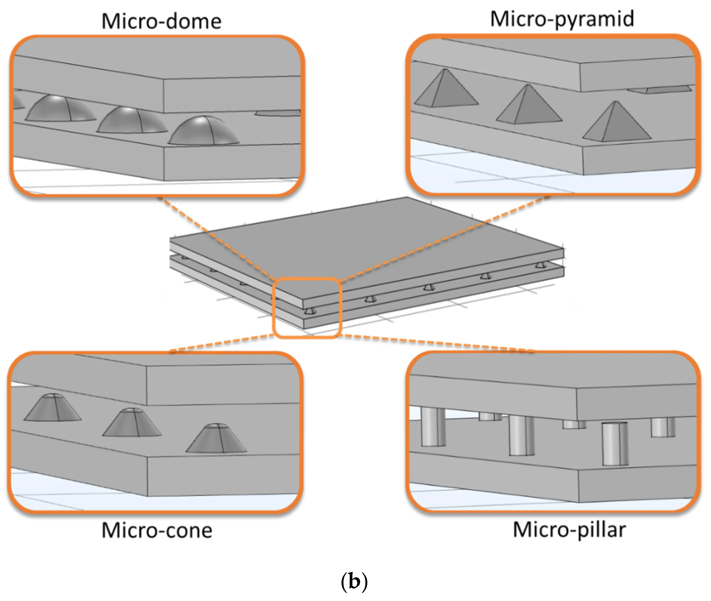

Figure 1: Schematic of micro-pyramid piezoresistive sensor

Figure 2: Four micro-feature shapes analyzed: pyramid, cone, dome, pillar
Project Overview
This research establishes design rules for highly sensitive piezoresistive pressure sensors using finite element analysis (FEA) in COMSOL Multiphysics. The study addresses a critical gap in the literature: while many micro-patterned piezoresistive sensors have been developed, there are no systematic design optimization guidelines. The work provides quantitative recommendations for micro-feature shape, material conductivity, spatial density, feature size, and pyramid angle to maximize sensitivity and current output for wearable pulse wave monitoring applications.
Problem Addressed
Most piezoresistive sensors output nanoampere-range currents, requiring bulky sourcemeters for signal acquisition
No design rules exist for optimizing micro-feature geometry in piezoresistive sensors
Trade-off between sensitivity and linearity not systematically studied
Need for milliamp-range output to enable truly wearable signal acquisition with simple electronics
Simulation Methodology
COMSOL Multiphysics Setup:
Physics Interfaces: Electric Currents (ec) + Solid Mechanics module
Formulation: Arbitrary Lagrangian-Eulerian (ALE) method for large deformation problems
Contact Algorithm: Augmented Lagrangian method (more accurate than default penalty method)
Mesh Type: Free tetrahedral with "extremely fine" size calibration
Convergence Criteria: DOF increased to 1000% until results varied <5%
Ensures high sensitivity and milliamp current output
Spatial Number Density
3 features/mm (low density)
Concentrates pressure for greater deformation
Pyramid Angle (α)
50° - 60°
Balance between contact growth and localized pressure
Feature Base Size (ℓ)
100 μm
Smaller features increase localized pressure
Footprint Area
1.8×1.8 mm²
Matches radial artery diameter (~2.3 mm)
}
Governing Equations
Charge Conservation (Continuity Equation):
∇·J = Qⱼᵥ
Current Density:
J = σE + Jₑ
Electric Field Strength:
E = -∇V
Where: J = current density, σ = electrical conductivity, E = electric field strength, V = electrical potential, Jₑ = externally generated current density.
Validation of simulation results against experimental data
Data analysis and interpretation
Manuscript writing, review, and editing
Funding
National Science Foundation (NSF) PATHS-UP ERC (Award #1648451)
NSF Awards #2126190 and #2107318
Related Publications
Jafarizadeh, B., Chowdhury, A.H., Khakpour, I., Pala, N., Wang, C. "Design Rules for a Wearable Micro-Fabricated Piezo-Resistive Pressure Sensor." Micromachines, 2022, 13, 838.
Jafarizadeh, B., Chowdhury, A.H., Sozal, M.S.I., Cheng, Z., Pala, N., Wang, C. "Hardware and Protocol for Testing of Piezoresistive Pressure Sensors for Pulse Wave Monitoring." IEEE Sensors Letters, 2023, 7(8), 2502304.
Jafarizadeh, B., Chowdhury, A.H., Sozal, M.S.I., Cheng, Z., Pala, N., Wang, C. "Wearable System Integrating Dual Piezoresistive and Photoplethysmography Sensors for Simultaneous Pulse Wave Monitoring." ACS Applied Materials & Interfaces, 2024, 16, 65402-65413.
Conclusion
This study established the first comprehensive design rules for micro-fabricated piezoresistive pressure sensors using finite element analysis. Key findings include: (1) micro-domes and micro-pyramids offer highest sensitivity, with pyramids providing better linearity; (2) material conductivity must exceed 10 S/m (preferably gold coating at 10⁵ S/m) to achieve milliamp current output for wearable signal acquisition; (3) optimal geometric parameters are 3 features/mm spatial density, 100 μm feature size, and 50-60° pyramid angle. These design rules enable the development of truly wearable pressure sensors that can be read by simple, low-cost electronics (Arduino, ESP32) instead of bulky sourcemeters, advancing the field toward practical, continuous cardiovascular monitoring.